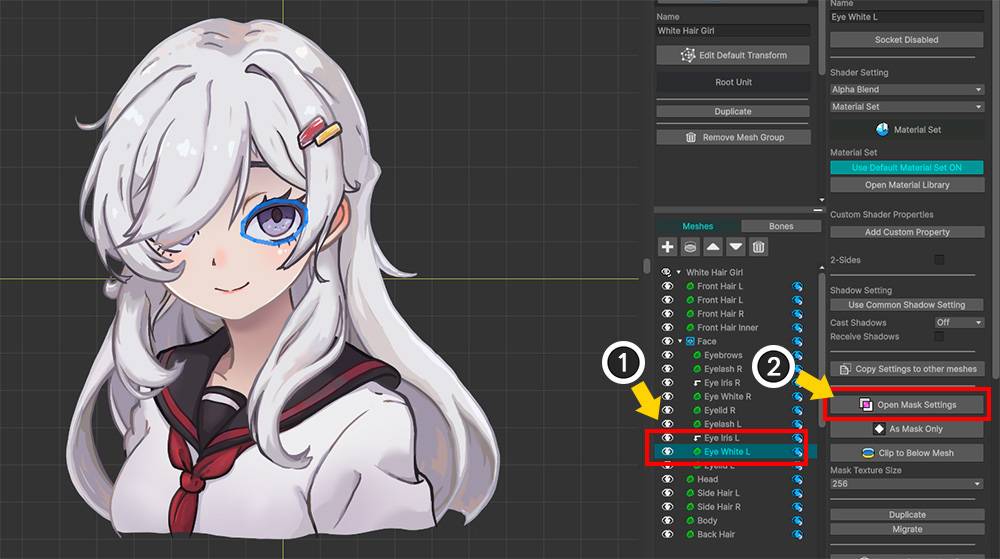
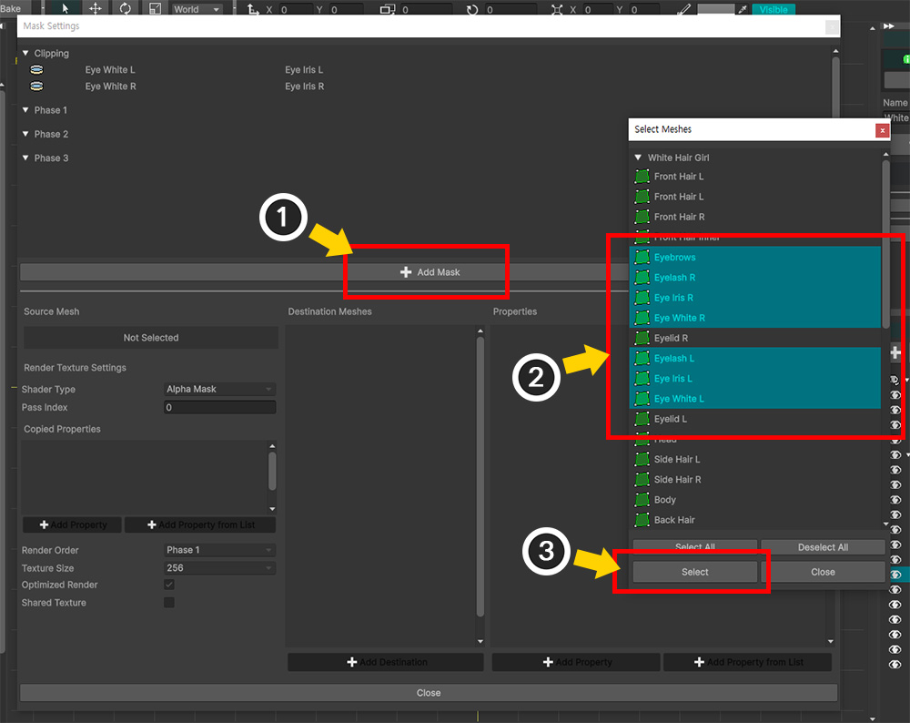
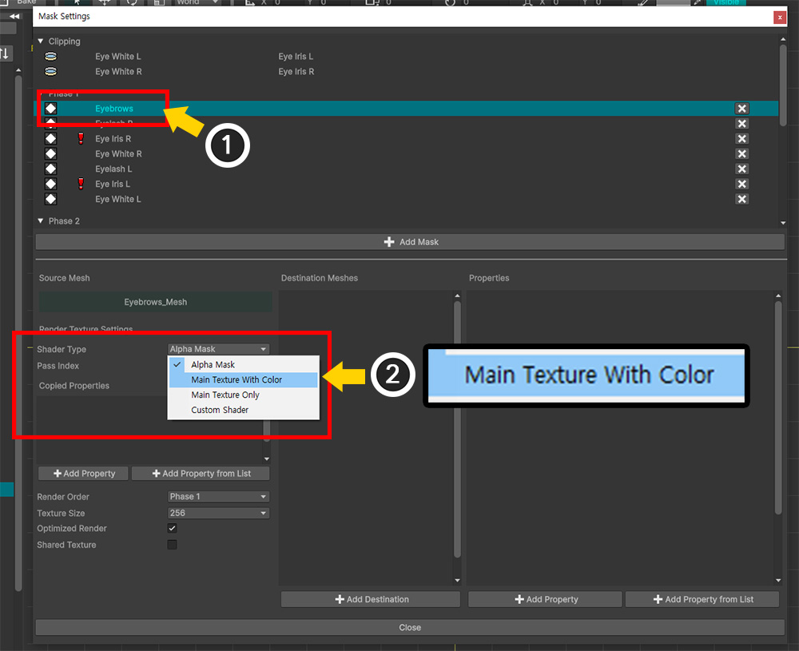
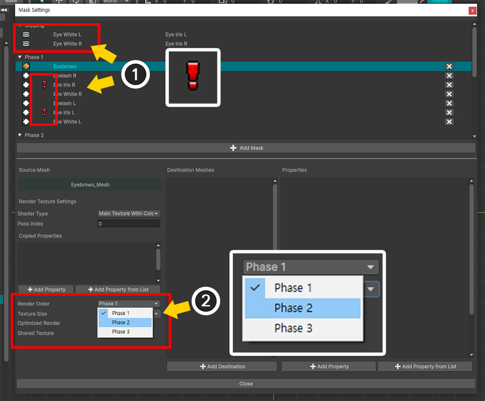
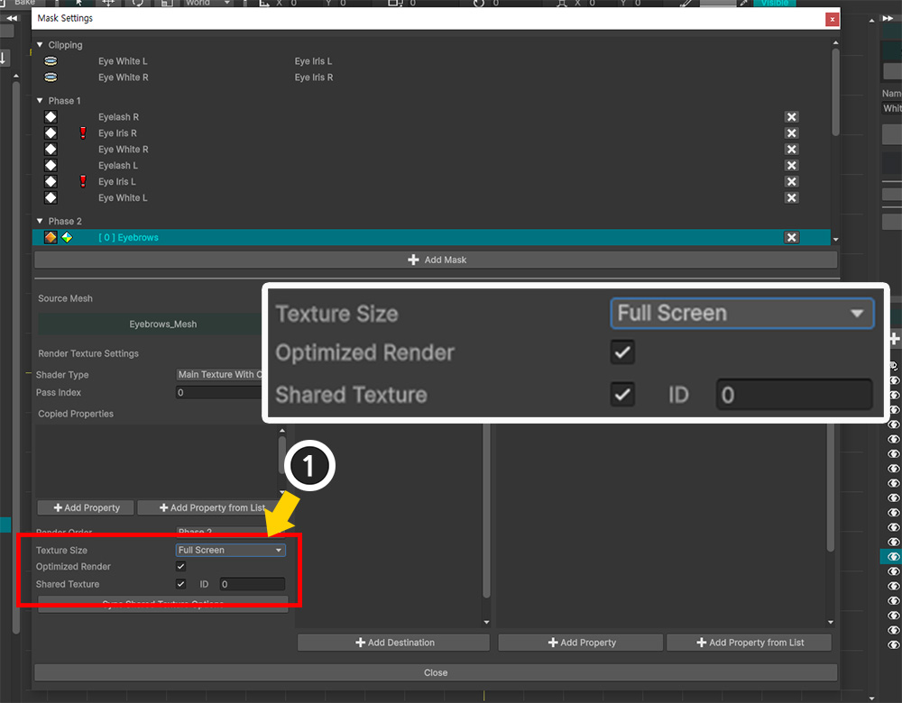
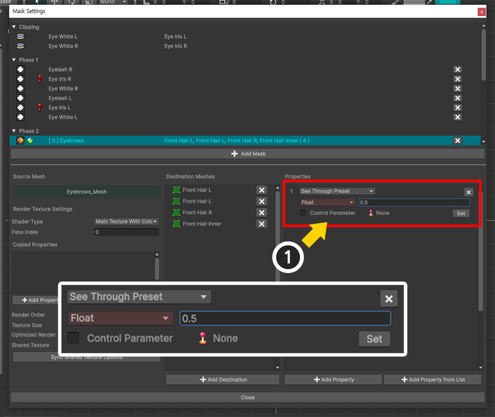
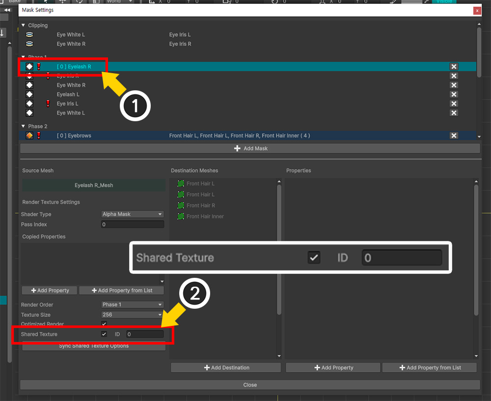
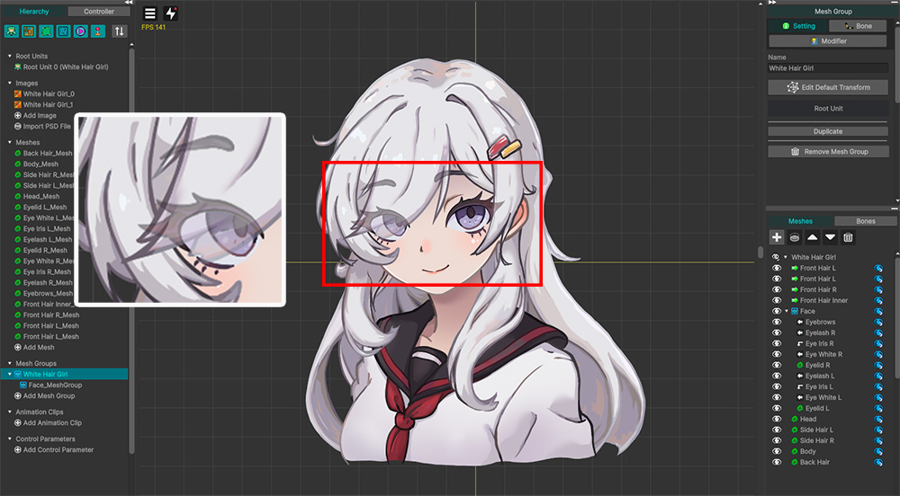
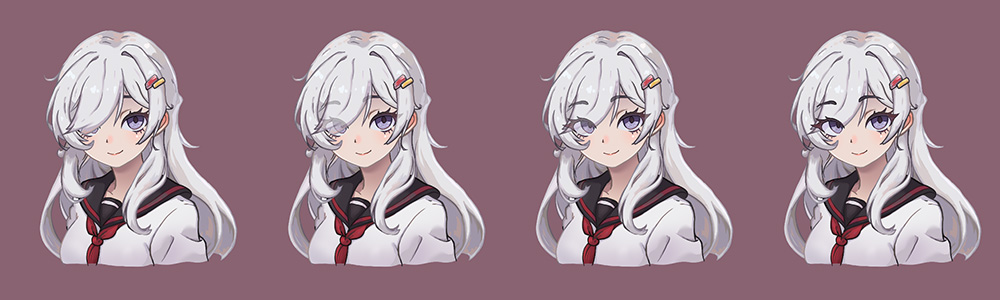

AnyPortrait > Manual > See-Through Effect
See-Through Effect
1.6.0

The image above is an "illustration of a character with front hair covering one eye."
When trying to express a character with this design beautifully, like the middle image, "a cartoonish presentation where the eye is slightly visible through the hair" is often used.
Let's think about how to express this in animation tools including AnyPortrait.
The easiest way is to make part of the "hair" layer slightly transparent.
However, there is a clear difference between what was intended (middle image) and the result of making the hair slightly transparent (right image).
When the "hair" layer becomes semi-transparent, not only the "eye" layers but also the "head" and "other hair" layers are all visible in overlapping areas, resulting in a somewhat messy expression.

Implementing this is not as easy as it sounds.
Because the "Eye" layers are positioned behind the "Hair" layers, they cannot be rendered in front of the opaque "Hair" layers.
In this case, you can express what you intended by using the "See-Through Effect" added in AnyPortrait v1.6.0.

The improved Mask feature allows you to use the "Normal Shader" instead of the existing "Alpha Mask Shader" when generating a render texture.
When the shader changes, it is rendered to the render texture similar to what is displayed on the screen.
Then, when passing this render texture to the target mesh, set it to "Color interpolation operation of RGB channels" instead of "Alpha clipping operation in Alpha channel".
Using the Mask feature in this way allows you to create a See-Through Effect.
Note
The examples presented on this page utilize not only the See-Through Effect, but also Shared Texture, Change Mask Shader, and Mask Chain.
For more information, please refer to the following manuals.
- Mask
- Mask and Custom Shader
- Mask Chain
The processing results of the See-Through effect and the general Clipping Mask processing seem to be opposite to each other.
This is because, in the See-Through Effect, the mesh that creates the mask appears to be clipped and rendered.
So it is better to view the See-Through Effect as a "utilized example of how masks work" rather than a "variation of the clipping mask."

Above is the character illustration imported into the AnyPortrait editor.
Let's make the "Eye..." meshes visible through the 4 "Front Hair..." meshes.
Before that, please also check that the "Eye Iris L/R" meshes are set to clip to the "Eye White L/R" mesh.

(1) Select one of the "Eye..." meshes.
(2) Press the Open Mask Settings button.

(1) Press the Add Mask button.
(2) Select all the "Eye" meshes to which you want to apply the See-Through effect by pressing the Ctrl key.
(3) Press the Select button.

Mask Data for the selected "Eye" meshes have been generated.
(1) Select one of the Mask Data.
(2) Change the value of Shader Type to "Main Texture With Color".
The value of this option makes the mask render texture be rendered with the same shader as the one rendered to the screen.

(1) As previously confirmed, the "Eye Iris L/R" meshes were clipping from the "Eye White L/R" meshes, which caused Mask Chain and Render Order Issues. (Related page)
(2) To solve the render order issue, change the value of Render Order of the selected Mask Data to "Phase 2".

Change the render texture options as above.
- Change Texture Size to a fairly large value. When Mask Chain occurs or Shared Texture is used, you should consider setting a high resolution for mask quality.
- Enable Shared Texture and specify an ID. This is to make the "Eye" meshes render to a common render texture. (We entered "0" as the ID value.)

(1) Press the Add Destination button.
(2) Select all "Front Hair..." meshes by pressing the Ctrl key.
(3) Press the Select button.

(1) Press the Add Property button.
(2) Change the preset type of the added property to "See Through Preset".

In the See-Through effect preset, you can set the "Alpha value" as an auxiliary parameter.
(1) Enter a value between "0~1" (here, "0.5") in the Float type additional parameter.
Now we have the Mask Data setup for the See-Through Effect.
In this example, we need to have multiple "Eye..." meshes see-through at once.
So let's continue setting up the other Mask Data to render to the same Shared Texture.

(1) Select another Mask Data.
(2) Check Shared Texture and enter the same value (here, "0") in the ID field.
Set the same for all remaining Mask Data.

(1) When the task of setting Shared Texture for all Mask Data is completed, numerous warning icons may be displayed as shown above.
This is because options such as Shader Type and Render Order are not yet synchronized in addition to the Shared Texture option.

(1) Re-select the Mask Data you initially selected.
(2) Press the Sync Shared Texture Options button.
(3) When the message appears, press the Sync All Options button.

The See-Through effect settings for all Mask Data of the "Eye..." meshes have been completed.

Let's close the Mask Setting Dialog and check the result.
You can see that the eye meshes are rendered through the front hair.
Since we entered 0.5 for the Alpha value, it is about 50% transparent.
Let's also learn how to control the alpha value using the Control Parameter instead of fixed values.

(1) Create a new Control Parameter.
(2) Set the name of the control parameter and set it to Float type.
(3) Set the value range to "0 ~ 1".

(1) Open the Mask Setting Dialog and select Mask Data with properties.
(2) Check Control Parameter among the property options and press the Set button.
(3) Select the Control Parameter you created earlier.
(4) Press the Select button.

(1) Now let's adjust the Control Parameter.
(2) You can see the degree of the see-through effect of the "Eye..." mesh changing.

Let's do Bake and check it in the Unity scene.
As you adjust the Control Parameter, you can see the degree to which the character's eyes are rendered through the hair changes.